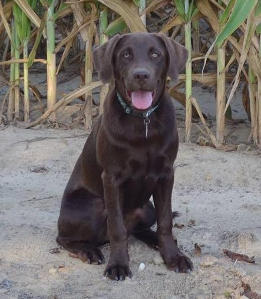

Born July 4th, 1993 I came into the world with a bang. I grew up on a family farm in Linden, North Carolina. Most of you have probably never heard of this little town, but it is about 15 miles north of Fayetteville. At the time we were tending around 3,000 acres of corn, soybeans, cotton, and tobacco. Since then our farm has decreased in size but my interest in farming has not. I still enjoy helping out whenever possible. In middle school I started playing Football and continued to play until my Junior year in High School. I decided not to play my Senior year becuase of various reasons but mostly because I wanted to just enjoy my last year in grade school. After visiting East Carolina I instantly knew I wanted to be a Pirate, I loved everything about the school. As move in day grew near I became anxious about moving away from home since this is all I had ever known but I am thankful that I stuck with my decsion. College has been an experience that could never be replaced.

I began classes at East Carolina University fall semester of 2012. When chosing a major I was really unsure at the time of what I want to do with my life. I have always had a interest in technology so the major Information and Computer Technology was a good choice. Even now I sometimes wonder if this field of study is where I want to remain. Growing up on a family farm I had always worked outside, so the technology field has been a big change for me. At East Carolina I was a on campus student for two and a half years until I was given the opportunity to intern for Cisco Systems. What was supposed to be a 6 month internship at Ciscos CALO lab has turned into a almost two year jouney where I am continueing to grow and learn new technologies. I have since then moved to a distant education student so that I can continue to take classes online.
At Ciscos Advanced Lab Operations (CALO) lab I am in charge of our shared XR devices that are used in customer network recreates. Since these chassis are shared among several different engineers at once, things can get alittle hectic at times trying to keep everything running smoothly. My daily responsiblitis inlude changing hardware and software for engineers as they request. I am also responsible for mantaining our static routes and AAA configurations on these chassis. The CALO lab in RTP is the main location of XR support so there is never a dull moment.
To your right you can see my chocolate lab, Riley, that my girlfriend and I decided to get going on 2 years ago. Riley has been a wonderful dog, that I spend most of my afternoons with walking around the farm. Like me she loves being out and about, simply enjoying the outdoors. My other hobbies include riding fourwheelers, working on my two trucks, and hanging out with my friends and wonderful girlfiend, Kaitlin. She has pushed me to do my best, even when things arent going as planned.
I plan to graduate this coming spring 2017 if everything works out accordingly. Where I want to go from there is still in the works. Cisco is a great company that really cares for their employees but I do not know if sitting in a cubical all day is going to work for me. I want to find a networking position that requires moving around interacting with different devices and people instead of being static to one building. I would love to find a position on Fort Bragg that would allow me to do just that. If I can make this happen it would not only allow me to do what I have studied in college but also remain in this areas that I do not wish to move away from. I am still working out my plans for the future, but I believe that I am going in the right direction.